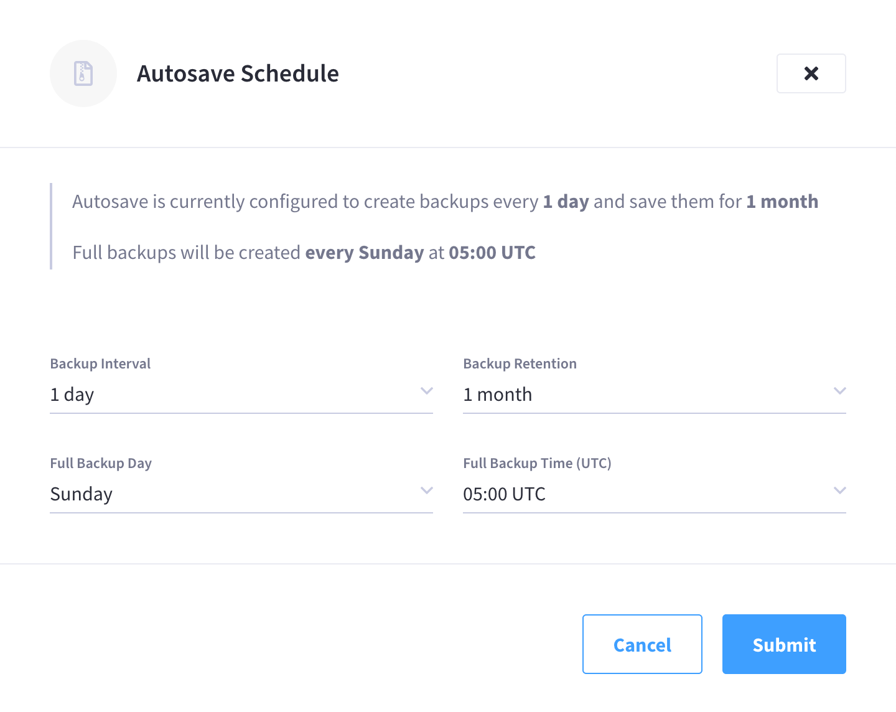
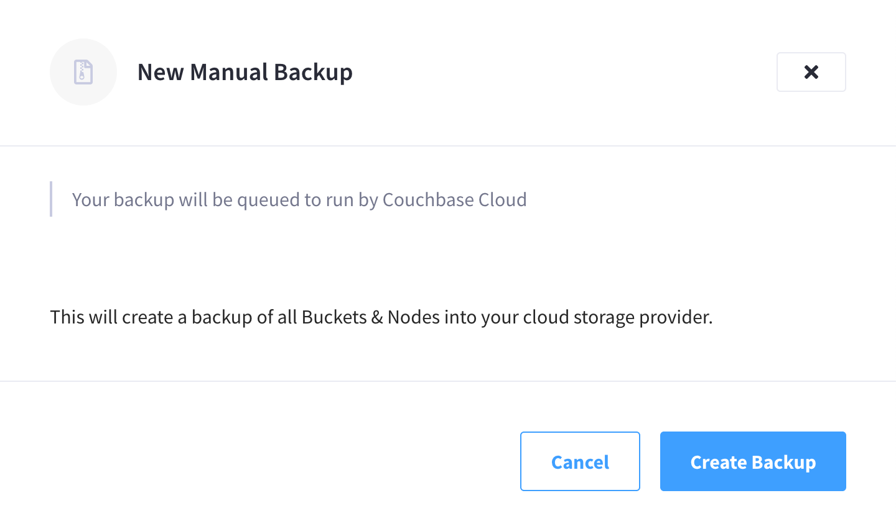
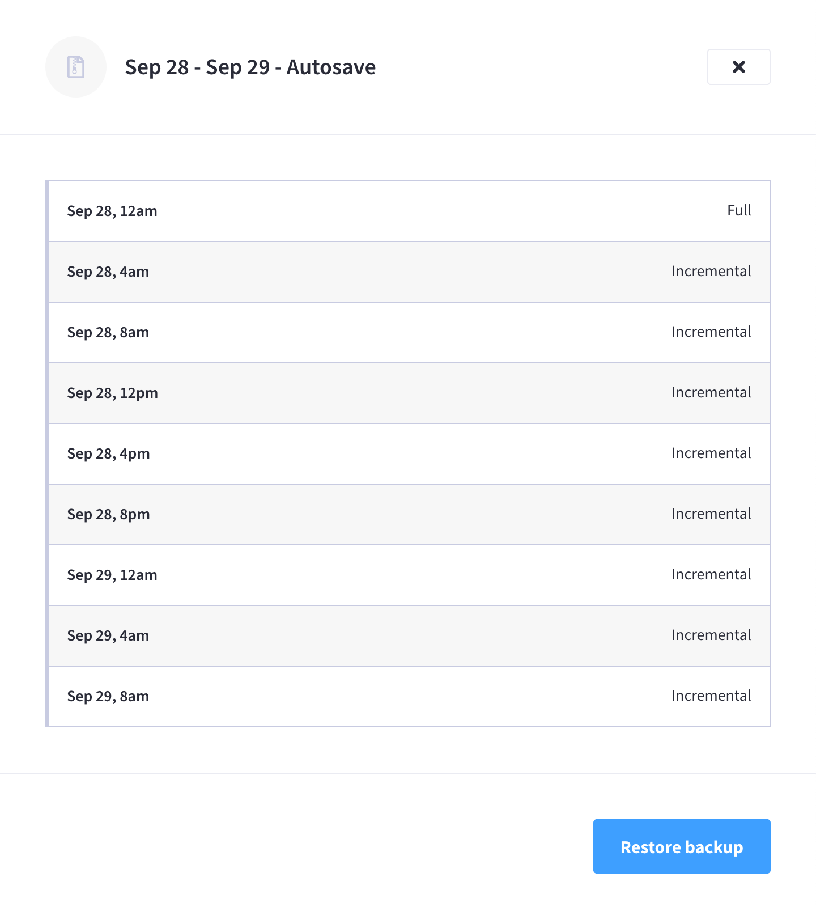

Manage Cluster Backups
Cluster backups contain a cluster’s bucket data. Backups can be taken on-demand, or configured on an automatic schedule.
Accessing Cluster Backups in the Couchbase Cloud UI
Backups can be accessed under the cluster’s Backup & Restore tab.
|
Permissions Required
In order to access backups in the Couchbase Cloud UI, the following permissions are required:
|
Backup Summary
A cluster’s Backup & Restore tab shows a summary of all the backups that exist for that cluster. The summary is displayed in table format, with sortable columns and a row for each backup.
The Backups list displays the following information about each backup:
- Version History
-
The time and date range for the backup set. If the Backup Type is Full, the time and date when the backup completed is displayed. If the Backup Type is Series, the date range between the first and last backup in the series is displayed.
- Backup Type
-
The backup’s type, as well as the backup method that was used to create the backup. The backup type can be Full or Series. Refer to Backup Types for more information.
The backup method that was used to create the backup is also listed in the same field alongside the backup type. The backup method can be either Autosave or Manual, depending on whether the backup was created automatically according to the cluster’s automatic backup schedule or if it was created manually.
A Series backup is listed as Full until it includes at least one Incremental backup, after which the backup type changes to Series.
Configure Automatic Backups
Automatic backups are mandatory for all clusters in Couchbase Cloud. A cluster will begin to take automatic backups upon successful deployment. The frequency and retention of automatic backups are determined by each cluster’s individual Autosave Schedule.
All clusters are deployed with a default Autosave Schedule. It is recommended that you change each cluster’s Autosave Schedule according your Recovery Time Objective (RTO) and Recovery Point Objective (RPO). For example, production clusters may require a much smaller backup window and a much longer backup retention period than development clusters.
|
Permissions Required
To change a cluster’s Autosave Schedule, the following permissions are required:
|
-
Go to the cluster’s Backup & Restore tab.
-
Go to the Clusters tab in the main navigation.
-
Find and click on the cluster that you wish to configure automatic backups for.
This opens the cluster with its Overview tab selected.
-
Click the Backup & Restore tab.
-
-
Click Manage Autosave.
This opens the Autosave Schedule fly-out menu.
 -
Configure the cluster’s Autosave Schedule.
The interactive fields are:
- Backup Interval
-
The frequency with which backups are taken. This can be
4 hours,8 hours,1 day,1 week,1 month, or1 year; and can be selected from the field’s dropdown menu. The default value is1 day.When set to
4 hours,8 hours, or1 day, a weekly Series backup will be created (except when Full Backup Day is set toEvery Day). After the first Full backup, each subsequent automatic backup that occurs over the course of the week will be an Incremental backup. Once the next Full backup occurs, a new weekly Series backup will be created and new Incremental backups will be a part of the new series. Full backups always occur on the day and time determined by the Full Backup Day and Full Backup Time (UTC) fields.When set to
1 week,1 month, or1 year, every backup will be a Full backup.The backup interval is calculated in increments of 4/8/24 hours from the Full Backup Time (UTC). Changing Backup Interval to 4 hoursor8 hourswill result in the next backup occuring at a time that is calculated back from Full Backup Time (UTC). For example, if it’s currently 20:00 UTC and Full Backup Time (UTC) is05:00 UTC, then if you change the backup interval to8 hours, the next Incremental backup will occur at 21:00 UTC (eight hours prior to 05:00 UTC). - Backup Retention
-
The amount of time each backup will be preserved, after which the backup will be deleted. This can be
1 day,1 week,1 month…11 months, or1 year…10 years. The default value is1 month.Backups are not deleted when the cluster is deleted, and will continue to be stored in the connected cloud according to the retention period that was configured at the time the cluster was deleted. Refer to the Delete a Backup section below for more information.
The Backup Retention setting applies to all existing and future backups, including manual backups. If you shorten the retention period, any existing backups that fall outside of the new retention period will be deleted. Backups can be lost within minutes of submitting a new Autosave Schedule that has a shorter Backup Retention setting. Deleted backups cannot be recovered.
- Full Backup Day
-
The day of the week on which the next Full backup is taken. This can be
Monday,Tuesday,Wednesday,Thursday,Friday,Saturday,Sunday, orEvery Day. The default value isSunday.The value for Full Backup Day does not apply to the first automatic backup of the cluster. The first automatic backup will occur at the next increment of the Backup Interval, no matter what day it is. If the interval is
1 day, then the first backup will simply occur the next time the Full Backup Time (UTC) occurs. If the interval is4 hoursor8 hours, then the first backup will occur at the first increment calculated back from Full Backup Time (UTC).After the first backup is taken, all subsequent Full backups will occur on the day set in Full Backup Day.
If Full Backup Day is set to Every Day, then Backup Interval must be set to1 day. - Full Backup Time (UTC)
-
The time of day when a Full backup is taken (only occurs on the day set in Full Backup Day). This can be any half-hour increment between
00:00 UTCand23:30 UTC. The default value is05:00 UTC.If you change the value of Full Backup Time (UTC), the next Incremental backup may occur at a different time than you might expect. This is because the value for Backup Interval is calculated in increments of 4/8/24 hours from the Full Backup Time (UTC).
For example, let’s say Backup Interval is currently set to
8 hoursand Full Backup Time (UTC) is set to04:00 UTC. If the current time is 21:00 UTC, you would see that an Incremental backup was taken at 20:00 UTC (eight hour interval). If you were to then set Full Backup Time (UTC) to06:00 UTC, then you would eventually see that another Incremental backup was taken at 22:00 UTC, just two hours later. This is because the eight hour backup interval was recalculated back from the new06:00 UTCvalue.
-
Once you’re satisfied with the configuration, click Submit.
Note that there can be a slight delay while the schedule is saved, after which the fly-out menu will close.
If no Full Autosave backup currently exists for the cluster (such as when a cluster is first deployed), then the first automatic backup will occur at the next increment of the Backup Interval, calculated back from Full Backup Time (UTC). (Refer to the description of Full Backup Day above.)
Once the backup has successfully completed, it will display in the Backups list.
Create a Manual Backup
In addition to automatic backups, you can also create on-demand manual backups of clusters. A manual backup is always a Full backup, and is always scheduled immediately, irrespective of the cluster’s Autosave Schedule.
|
Permissions Required
To create a manual backup of a cluster, the following permissions are required:
|
-
Go to the cluster’s Backup & Restore tab.
-
Go to the Clusters tab in the main navigation.
-
Find and click on the cluster that you wish to create a manual backup of.
This opens the cluster with its Overview tab selected.
-
Click the Backup & Restore tab.
-
-
Click Manual Backup.
This opens the New Manual Backup fly-out menu.
 -
To create a new manual backup, click Create Backup.
Note that there can be a slight delay while the backup is scheduled, after which the fly-out menu will close.
Once the backup has successfully completed, it will display in the Backups list.
| Manual backups are not retained indefinitely. They are retained according to the retention period set in the Autosave Schedule. |
View Backup Details
You can view more detailed information about a cluster backup by inspecting it in the Couchbase Cloud UI.
|
Permissions Required
To view details about a backup, the following permissions are required:
|
-
Go to the cluster’s Backup & Restore tab.
-
Go to the Clusters tab in the main navigation.
-
Find and click on the cluster that contains the backup that you wish to inspect.
This opens the cluster with its Overview tab selected.
-
Click the Backup & Restore tab.
-
-
In the Backups list, find and click on the backup that you wish to inspect.
This opens the backup’s fly-out menu. The details available in the fly-out menu will be different depending on whether the backup is strictly a Full backup, or whether it is a Series backup.

The backup’s fly-out menu principally contains details about the backup type. For Manual backups, and any Autosave backups that don’t include Incremental backups, only the Full backup is listed. For Series backups, the Full backup is listed, along with all associated Incremental backups that are currently in the series.
Each backup is listed with the date and time that it finished, along with the backup type (Full or Incremental).
Delete a Backup
Backups are not deleted when the cluster is deleted, and will continue to be stored in the connected cloud according to the retention period that was configured at the time the cluster was deleted.
Backups can be deleted in the following ways:
-
Manual deletion
The Couchbase Cloud UI does not currently support the manual deletion of cluster backups. However, you can delete them directly from the connected cloud using your cloud provider’s console. Refer to the View Backup Files section for more information.
-
Exceeding the backup retention period
Once a backup’s age exceeds the value set for Backup Retention in the Autosave Schedule, it will automatically be deleted.
-
The connected cloud is deleted
If the connected cloud in which the backup resides is deleted, then all of the backups that were stored in the connected cloud are deleted.
View Backup Files
Cluster backups are stored in the connected cloud in which the cluster resides.
For AWS, the backups for all clusters in a given connected cloud are located in an S3 bucket at the following location:
Amazon S3 > couchbase-cloud-name-ID > backups
Within backups there is a separate directory for each cluster, each named with the cluster’s ID.
Each cluster directory contains all of the backups for an individual cluster.
|
At this time, the easiest way to find the cluster’s ID is to navigate to to the cluster’s Overview tab, and inspect the URL in your browser: https://cloud.couchbase.com/projects/efba5ea1-a3f8-448c-b02d-14d69170c992/clusters/c4827955-d6fd-4108-b43a-ce195efccb9b?tenantId=58df477a-2342-4f63-8248-752f333f93c0 The cluster ID directly follows |
So, as an example, if the name of the connected cloud is My-Cloud (with Cloud ID ending in 037df), and the cluster’s ID is 0dd4cf22-0008-43a7-a382-5cf762ea9d7a, then the cluster’s backup directory could be found at the following location in S3:
/couchbase-my-cloud-037df/backups/0dd4cf22-0008-43a7-a382-5cf762ea9d7a/
Backup File Layout
Each sub-directory within a cluster’s backup directory is known as a backup repository. A backup repository contains all of the bucket data, logs, and metadata associated with a backup (Full or Series). When looking at the cluster’s Backup & Restore tab in the Couchbase Cloud UI, one row in the Backup Summary represents one backup repository in the cluster’s backup directory.
Each backup repository contains one Full backup. If it is a Series backup, the repository contains one Full backup plus all the Incremental backups from the rest of the series. The entire contents of a backup repository are required to perform a successful restore operation.
| To preserve an emergency copy of a backup, you can use your cloud provider’s console to download a single backup repository (one cluster backup) or the cluster’s entire backup directory (all of the cluster’s backups). |
Each backup repository is named with a backup ID. The backup ID starts with the date of the Full backup, and is appended with a set of alphanumeric characters.
2020-09-25-25e1476f
A backup repository that contains a manual backup also has -manual appended to its ID.
2020-09-24-e7463699-manual
The following is an example layout of a backup repository containing a Series backup:
S3/couchbase-my-cloud-037df/backups/0dd4cf22-0008-43a7-a382-5cf762ea9d7a/ # Cluster backup directory
|-- 2020-09-25-25e1476f # Backup repository
| |-- 2020-09-25-25e1476f
| | |-- {year}-{month}-{day}T{hr}_{min}_{sec}.{nanos} # First backup in series (Full)
| | | |-- {bucket name}-{bucket uuid} # Bucket backup
| | | |-- travel-sample-4dfa8b44dce990c5580bd13716c30885 # Bucket backup
| | | | |-- data
| | | | | |-- .storage_meta
| | | | | |-- failoverlog_0.fol
| | | | | |-- failoverlog_1.fol
| | | | | |-- .shard_0.sqlite.0 # Cluster data
| | | | | |-- .shard_1.sqlite.0 # Cluster data
| | | | | |-- snapshot_0.snp
| | | | | |-- snapshot_1.snp
| | | | | |-- stats_0.json
| | | | | |-- stats_1.json
| | | | |-- .restrictions.json
| | | | |-- analytics.json
| | | | |-- bucket-config.json
| | | | |-- full-text.json # Full Text Indexes
| | | | |-- gsi.json # Global Secondary Indexes
| | | | |-- range.json
| | | | |-- views.json
| | | |-- .info
| | | |-- .version
| | | |-- events.json
| | | |-- fts-aliases.json
| | | |-- plan.json
| | |-- 2020-09-25T04_32_19.934323735Z # Second backup in series (Incremental)
| | |-- 2020-09-25T08_32_29.707502389Z # Third backup in series (Incremental)
| | |-- backup-meta.json # Backup configuration
| |-- logs
| |-- .backup
File Descriptions
- backup-meta.json
-
This file is used to store the backup configuration for the backup repository. Each time a backup is run it will read these options, connect to the cluster, and backup data from the point where it last left off. All parameters in this file are configured automatically by Couchbase Cloud.
- gsi.json
-
This file contains a backup of all global secondary indexes in a particular bucket.
- full-text.json
-
This file contains a backup of all Full Text Indexes in a particular bucket.
- .shard_*.sqlite.0
-
These are sqlite files that contain the cluster data.